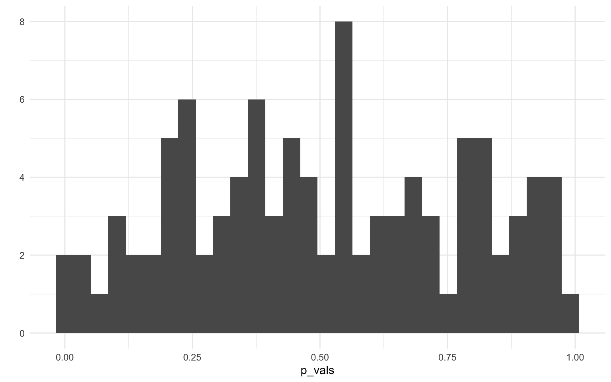
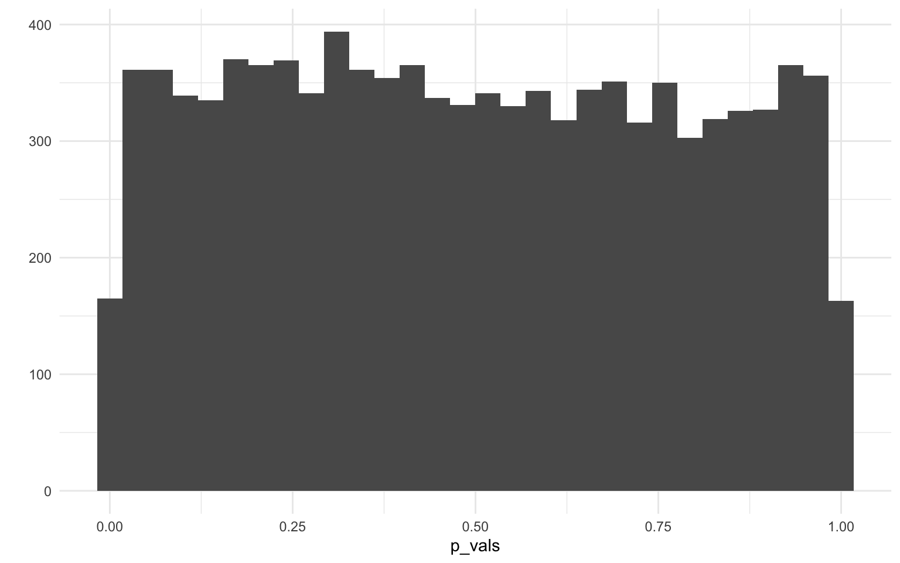
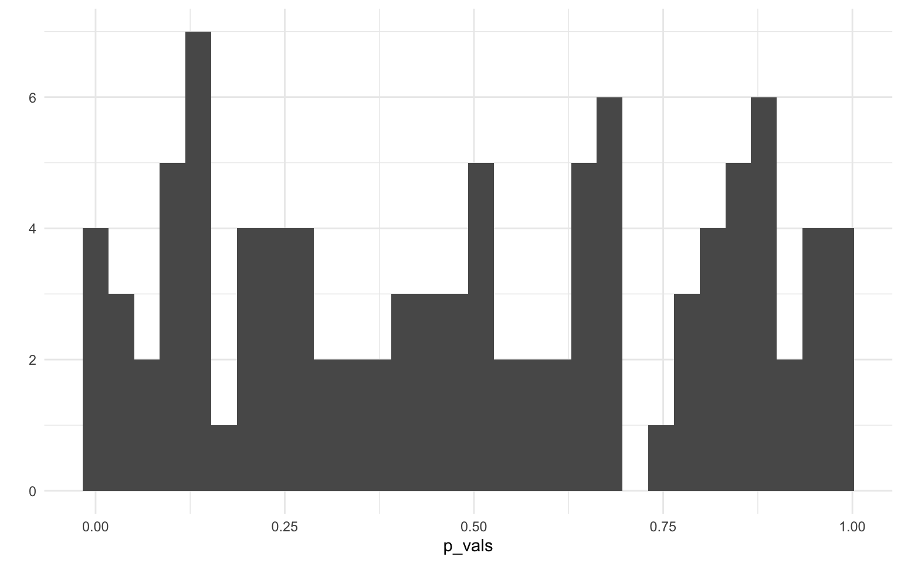
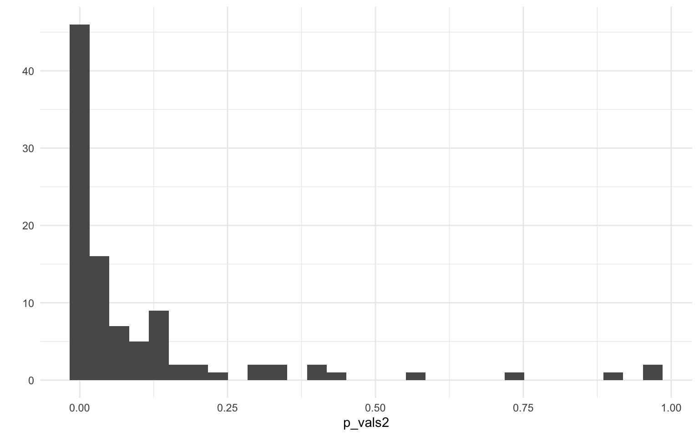
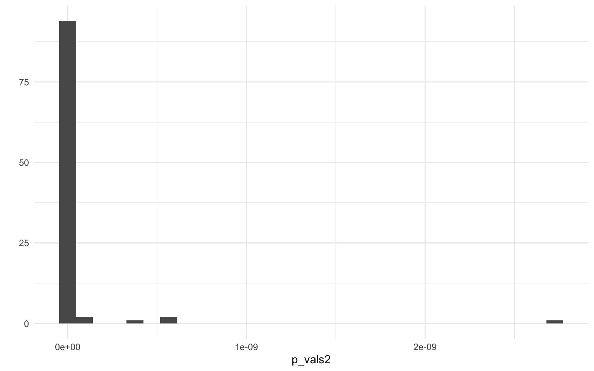

library(tidyverse)
theme_set(theme_minimal())2 Inferenzstatistik
2.1 Alpha-Fehler
Simulation eines T-Tests für zwei Stichproben
IQ ist verteilt mit M = 100, SD = 15, Population von Mainz
iq_population <- rnorm(n = 220000, mean = 100, sd = 15)
summary(iq_population) Min. 1st Qu. Median Mean 3rd Qu. Max.
25.34 89.83 99.97 99.99 110.14 169.02 Wir ziehen zwei Stichproben
Stichprobe
sample_a <- sample(iq_population, size = 20)
summary(sample_a) Min. 1st Qu. Median Mean 3rd Qu. Max.
68.76 91.84 99.89 98.05 106.38 113.11 Stichprobe 2
sample_b <- sample(iq_population, size = 20)
summary(sample_b) Min. 1st Qu. Median Mean 3rd Qu. Max.
78.72 89.14 106.70 102.82 115.35 118.95 2.2 T-Test
t.test(sample_a, sample_b, var.equal = T)
Two Sample t-test
data: sample_a and sample_b
t = -1.1898, df = 38, p-value = 0.2415
alternative hypothesis: true difference in means is not equal to 0
95 percent confidence interval:
-12.872691 3.342332
sample estimates:
mean of x mean of y
98.05454 102.81972 Wir vergleichen 100 Mal zwei 20er Stichproben und speichern den p-Wert
p_vals <- replicate(n = 100, {
t.test(
x = sample(iq_population, 20),
y = sample(iq_population, 20),
var.equal = T
)$p.value
})
p_vals [1] 0.266056788 0.011805834 0.167018134 0.704500107 0.345443621 0.380222957
[7] 0.470729480 0.643775800 0.918265539 0.022217129 0.537944721 0.966620458
[13] 0.672722733 0.768573553 0.780945795 0.685542986 0.477562735 0.906095194
[19] 0.972273787 0.542383276 0.710760366 0.602961353 0.690921487 0.189172575
[25] 0.375682831 0.437290189 0.550286392 0.510024563 0.294623368 0.233243960
[31] 0.437001839 0.122412971 0.547305050 0.367063808 0.090906863 0.238896427
[37] 0.243839546 0.217462523 0.661785433 0.589076942 0.771535845 0.636541321
[43] 0.557126481 0.778844084 0.829132381 0.399567182 0.602804909 0.761982310
[49] 0.904516546 0.338807186 0.226692666 0.355730229 0.009262001 0.319170803
[55] 0.304111802 0.330592594 0.538829723 0.272557828 0.999735236 0.863550739
[61] 0.195930074 0.907587414 0.816406862 0.434219712 0.413247765 0.407960734
[67] 0.137381726 0.483253420 0.182802222 0.825612703 0.618293400 0.386019222
[73] 0.906676382 0.535119403 0.244795034 0.797052925 0.888893398 0.108516377
[79] 0.812298581 0.964745453 0.858325862 0.372516509 0.835966793 0.196222184
[85] 0.955888601 0.214908271 0.091312076 0.233860379 0.072470390 0.532740951
[91] 0.044074319 0.693916057 0.375083609 0.905039459 0.460980580 0.717480461
[97] 0.482886086 0.574766830 0.523788421 0.455518601qplot(p_vals)
Frage 1: Wieviele p-Werte sind signifikant (Alpha-Fehler)?
sum(p_vals <= .05)[1] 4Frage 2: Was sollte herauskommen, wenn wir statt 100 gleich 10.000 Simulationen machen?
Wenn die Nullhypthoese zutrifft, ist der p-Wert eine Zufallsvariable, daher einfach gleichverteilt.
p_vals <- replicate(n = 10000, {
t.test(
x = sample(iq_population, 20),
y = sample(iq_population, 20),
var.equal = T
)$p.value
})
p_vals %>% head()[1] 0.9105245 0.8109785 0.4772827 0.4015347 0.4925812 0.5969744qplot(p_vals)
sum(p_vals <= .05)[1] 506Frage 3: Was sollte sich am Alpha-Fehler mit größeren Stichproben ändern?
p_vals <- replicate(n = 100, {
t.test(
x = sample(iq_population, 1000),
y = sample(iq_population, 1000),
var.equal = T
)$p.value
})
p_vals [1] 0.47330064 0.97803716 0.60552374 0.47804164 0.04481504 0.99386762
[7] 0.66882975 0.87570723 0.67418884 0.27033049 0.27676961 0.95478092
[13] 0.82529926 0.18429905 0.82638485 0.66195516 0.15162659 0.09527672
[19] 0.32931873 0.49764559 0.07085368 0.12454357 0.69431119 0.81671265
[25] 0.22421024 0.95720505 0.47120339 0.87641642 0.15009605 0.45442674
[31] 0.09828108 0.68410201 0.65802506 0.57657342 0.14424806 0.28387216
[37] 0.51248703 0.42277413 0.06365114 0.93067258 0.89580545 0.24027699
[43] 0.04239783 0.30725156 0.01551675 0.04369153 0.65302064 0.01135340
[49] 0.66983199 0.87306099 0.52900655 0.13176955 0.25849150 0.79479684
[55] 0.83263159 0.19727217 0.01343720 0.64885425 0.81791310 0.67095631
[61] 0.14559710 0.12670924 0.99630251 0.37883507 0.23152338 0.74433267
[67] 0.86039802 0.22017699 0.21654311 0.41424776 0.87681304 0.24049485
[73] 0.90436880 0.78115028 0.57888202 0.42661511 0.44350764 0.64446756
[79] 0.11541168 0.99088408 0.49989769 0.38667563 0.96294195 0.55647787
[85] 0.40131075 0.32077311 0.51623369 0.01691940 0.11618645 0.85359228
[91] 0.93661658 0.35464948 0.61524348 0.84011239 0.78087436 0.50449350
[97] 0.08958934 0.86380419 0.86894742 0.20935281qplot(p_vals)
sum(p_vals <= .05)[1] 72.3 Beta-Fehler
JGU-Studierende sind etwas schlauer im Schnitt
iq_jgu <- rnorm(n = 31000, mean = 110, sd = 15)
summary(iq_jgu) Min. 1st Qu. Median Mean 3rd Qu. Max.
44.95 99.90 109.94 109.99 120.05 170.32 Wir vergleichen 20 Studierende mit 20 anderen Mainzern
t.test(sample(iq_jgu, size = 20),
sample(iq_population, size = 20),
var.equal = T
)
Two Sample t-test
data: sample(iq_jgu, size = 20) and sample(iq_population, size = 20)
t = 4.3341, df = 38, p-value = 0.0001036
alternative hypothesis: true difference in means is not equal to 0
95 percent confidence interval:
11.31438 31.14824
sample estimates:
mean of x mean of y
116.15676 94.92545 Wir vergleichen 100 Mal zwei 20er Stichproben und speichern den p-Wert
p_vals2 <- replicate(n = 100, {
t.test(
x = sample(iq_jgu, 20),
y = sample(iq_population, 20),
var.equal = T
)$p.value
})
p_vals2 [1] 0.0049323784 0.0136094189 0.0707891474 0.0332167058 0.0039317825
[6] 0.9691063390 0.9547288833 0.0123310283 0.1049513345 0.0035313236
[11] 0.1725749591 0.0154726762 0.0002586409 0.0039336837 0.0242107887
[16] 0.0001625974 0.1006175314 0.0007169191 0.0153680160 0.0855882797
[21] 0.1342611533 0.0080562473 0.8959677331 0.0032556897 0.0217427182
[26] 0.0009877948 0.1425759779 0.0379789706 0.0014634392 0.5784442513
[31] 0.0075639667 0.0734148693 0.1451274450 0.0289075908 0.2133173550
[36] 0.3196132842 0.3077926419 0.0069256668 0.0065880164 0.0040880429
[41] 0.1104754367 0.0018220889 0.1260005549 0.0180870584 0.0233052924
[46] 0.3308826938 0.0509968109 0.3161577484 0.0126299747 0.1232854768
[51] 0.0289609462 0.0266416630 0.0498878385 0.1393064500 0.0100350445
[56] 0.0009008413 0.0570560150 0.0048690822 0.0204878817 0.0001441714
[61] 0.7387953878 0.1137451328 0.0676074947 0.0364366528 0.0529649836
[66] 0.0100470197 0.0148309115 0.1269561165 0.0007373738 0.0032011645
[71] 0.0153007551 0.0019384566 0.0051785453 0.0111890759 0.0027892532
[76] 0.0058568178 0.0370128626 0.4403074707 0.0148626188 0.0130871814
[81] 0.0015739983 0.0015015578 0.1390556435 0.0167209388 0.1689882228
[86] 0.2285722087 0.0414812370 0.0089885526 0.0832757983 0.0036931749
[91] 0.0043361245 0.1224352886 0.2046439779 0.0107873263 0.0009491044
[96] 0.0403679980 0.3940690740 0.0123224247 0.0001850200 0.4169194907qplot(p_vals2)
Frage 1: Wieviele p-Werte sind nicht-signifikant (Beta-Fehler)?
sum(p_vals2 > .05)[1] 38Frage 2: Was sollte sich am Beta-Fehler mit größeren Stichproben ändern?
p_vals2 <- replicate(n = 100, {
t.test(
x = sample(iq_jgu, 300),
y = sample(iq_population, 300),
var.equal = T
)$p.value
})
p_vals2 [1] 5.893541e-17 1.632825e-12 7.202508e-14 4.503420e-19 1.008217e-20
[6] 1.375041e-14 1.314498e-16 4.505030e-16 2.207744e-14 2.725436e-09
[11] 6.441425e-18 3.336687e-16 6.322964e-13 6.048686e-12 3.436564e-15
[16] 6.440244e-12 8.107246e-17 5.255984e-15 1.547903e-15 2.674060e-12
[21] 3.896387e-18 8.780714e-15 2.159458e-17 3.232757e-14 1.454338e-15
[26] 8.224677e-16 1.379423e-19 2.727604e-15 9.599139e-16 6.471341e-21
[31] 3.277313e-15 8.331084e-17 7.368305e-19 1.697235e-18 5.201681e-11
[36] 1.144712e-12 1.146079e-13 5.042670e-15 1.624904e-14 2.723903e-17
[41] 4.636439e-17 6.155706e-18 6.756960e-16 3.603510e-16 1.569653e-14
[46] 3.551658e-18 6.344705e-14 5.769273e-12 2.642840e-13 6.162738e-16
[51] 1.740672e-17 1.700968e-12 2.248875e-13 8.094686e-15 3.204757e-12
[56] 1.039805e-17 2.948803e-12 4.606922e-11 1.657453e-13 5.601011e-10
[61] 3.107334e-18 4.732416e-14 2.655210e-16 1.573649e-14 5.546494e-10
[66] 4.249898e-15 1.022645e-17 3.355154e-18 8.371786e-15 5.373560e-16
[71] 5.821381e-14 1.985269e-15 3.939942e-13 3.540840e-13 3.428797e-14
[76] 3.903880e-10 6.118959e-12 2.717248e-17 2.174368e-25 1.779461e-13
[81] 2.407854e-13 1.157753e-10 2.846724e-18 1.086064e-13 1.157944e-15
[86] 1.189862e-18 1.803112e-20 1.032433e-12 7.586722e-13 2.547765e-14
[91] 1.476021e-15 5.593700e-18 3.185670e-15 1.614770e-16 1.509294e-19
[96] 8.289040e-18 5.438738e-13 4.921509e-17 7.810381e-23 4.937885e-14qplot(p_vals2)
sum(p_vals2 > .05)[1] 0